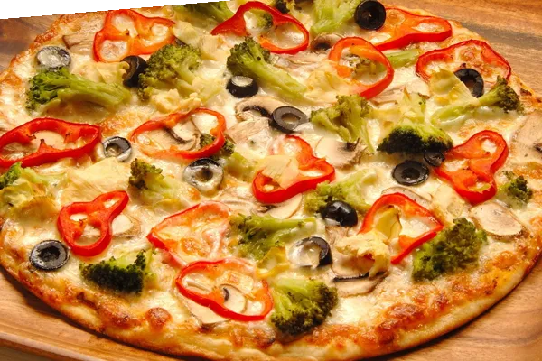

Pizza
Jedenaście rodzajów, od Taniej za 16 zł po Sołtysa z czterema rodzajami mięs. Możesz też złożyć własną z czterech składników.
Pisarzowa Pękalówka · koło Limanowej
Jedenaście pizz w dwóch rozmiarach, kebab w dwóch wielkościach i zapiekanki. Zadzwoń, odbierz po drodze.

od 16 złJedenaście rodzajów, od Taniej za 16 zł po Sołtysa z czterema rodzajami mięs. Możesz też złożyć własną z czterech składników.
Kebab duży i mały, shoarma, hamburger, cheeseburger, zapiekanki — także z mięsem z kebaba.
Pakujemy pizzę i dania barowe. Ostatnie zamówienia telefoniczne przyjmujemy pół godziny przed zamknięciem.
Jesteśmy w Pisarzowej na Pękalówce, przy drodze prowadzącej na stadion Olimpii. Kilka minut od Limanowej.
Zamówienia przyjmujemy telefonicznie — podaj numer pizzy z karty i rozmiar, 30 albo 40 centymetrów.